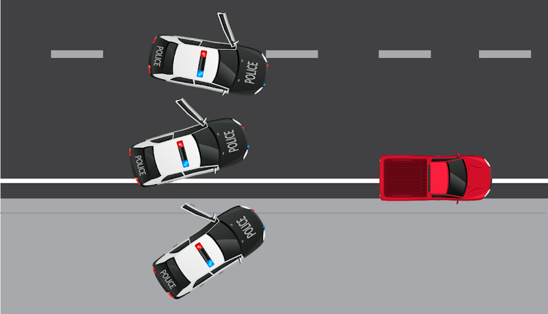

SASP
San Andreas State Police
Last Updated on - April 27, 2025
Introduction
San Andreas Law Enforcement agencies derive their authority from the Executive Branch of the San Andreas State Government. They are responsible for law enforcement, criminal investigations, and the custody, control, and care of the State's imprisoned population.
Law Enforcement Agencies
San Andreas State Police
SASP
The San Andreas State Police provide specialised law enforcement services and support to their sister agencies. Troopers often operate with greater flexibility across a larger jurisdiction and provide police interceptor support during high speed, high risk pursuits.

San Andreas State Park Rangers
SASPR
The San Andreas State Park Rangers provides general law enforcement and criminal investigation services throughout the areas of the state in which wildlife are more known to reside as well as to investigate wildlife sporting activities such as fishing and hunting.
Blaine County Sheriff's Office
BCSO
The Los Santos Police Department provides general law enforcement and criminal investigation services to the citizens of Blaine County.

Los Santos Police Department
LSPD
The Los Santos Police Department provides general law enforcement and criminal investigation services to the citizens of Los Santos.
Law Enforcement Oath
"I, _______________, do solemnly swear (or affirm) that I will support and defend the Constitution of the State of San Andreas against all enemies, foreign and domestic; that I will bear true faith and allegiance to the Constitution of the State of San Andreas; that I take this obligation freely, without any mental reservation or purpose of evasion, and that I will well and faithfully discharge the duties of the office upon which I am about to enter."
Professionalism
Law Enforcement is considered a profession and as such San Andreas expects all Law Enforcement Officers to act accordingly. San Andreas Law Enforcement Officers are expected to display the following attributes:
Specialized Knowledge
Law Enforcement Officers are highly trained and must master a broad skillset to effectively execute their duties. LEOs are expected to retain and maintain their currency on all SOPs, policies, and laws in order to provide quality law enforcement services.
Competency
Law Enforcement Officers are reliable, efficient, and are able to execute their duties. LEOs also avoid making excuses and instead find solutions to problems.
Honesty and Integrity
Law Enforcement Officers are honest and exhibit integrity, always taking the high road in a situation. As a values based organisation LEOs are expected to not compromise their own or the organisation's values. Furthermore, LEOs are humble and are willing to seek help when required.
Accountability
Law Enforcement Officers hold themselves and others accountable for the things that they say and do. LEOs take responsibility for their mistakes and work to remedy their deficiencies.
Self-Regulation
Law Enforcement Officers maintain their composure under pressure. LEOs remain calm when faced with adversity, respect all individuals they encounter, and display a high degree of emotional intelligence while executing their duties.
Appearance
Law Enforcement Officers look the part. They keep their hair and uniforms kempt, wear the appropriate uniform, and carry themselves with a degree of pride.
Chain of Command
From the beginning of each LEO's career they are assigned a rank. These ranks help to delineate each LEO's experience, scope of responsibility, and supervisory status while also establishing a clear command structure. The chain of command helps non-supervisory LEOs know who their immediate, or first line, supervisor is and ensures that questions, concerns, and issues are solved at the lowest level possible before involving second and third line supervisors.
High Command
Command
Officers
High Command Responsibility
A High Command Member's job is to oversee the functioning of the Entire Law Enforcement, Manages the overall administration and operations of the Police Department. Advises and develops staff to ensure continual professional growth in related disciplines.
Responsibilities:
- Overlook the Hiring and Firing process of LEO's
- Overlook all the responsibilities of a Command Member
- Maintain good relationships with the DOJ, EMS and the Citizens of San Andreas
- HC can overrule any decision taken or given by any LEO including Command Members
Command Responsibility
A Command Member's job is to make sure that the Functioning of the Law Enforcement is Well Oiled and Functions according to the requirements of the State of San Andreas.
Responsibilities:
- To make sure that all LEO's (Command and Below) are working according to the requirements of the Law Enforcement
- To have a regular check with the Incident Case Reports / Reports
- To take necessary disciplinary action whenever required (Not following COC, Misconduct, Insubordination, etc)
- To take lead in situations on field and ensure efficient results to solve cases
- A Command member can Strike and Suspend any given LEO for his/her mistake according to the disciplinary action sheet
Administrative Procedures
LEO Hiring and Initial Training Overview
There are seven steps to the hiring process
1. Statement of Interest
Individuals interested in becoming a Law Enforcement Officer may state their interest to any on-duty receptionist at MRPD or alternatively a member of Command. Interested individuals will be provided with a departmental application form to complete and submit.
2. Initial Screening
A member of the specified department's recruiting team will review submitted forms and conduct initial screening of interested persons. Individuals who pass will move to the next phase and may conduct ride-alongs while awaiting Field Investigation and Structured Interview. Those not selected will be informed of reasons and when they can resubmit.
3. Field Investigation
A member of the Personnel and Training Division will conduct checks into employment, police, and financial records as well as conduct interviews with friends, family, and coworkers.
4. Structured Interview
Individuals will be invited to conduct a structured interview with a panel consisting of various members of the three agencies. This interview will consist of prior knowledge and critical thinking questions designed to assess the individual's suitability for employment.
5. Conditional Offer of Employment
Individuals who pass both the Field Investigation and Structured Interview will receive a conditional offer of employment. These individuals will immediately begin training as a Cadet under the supervision of an FTO while waiting to attend Academy.
6. Medical Evaluation
New Cadets must conduct a thorough physical examination with a licensed medical doctor at Pillbox Medical Center to certify that they are in excellent health with no physical conditions that would limit them from safely performing their duties as a law enforcement officer.
7. Academy & FTO Phase
All new hires will conduct a formal training academy in which they are instructed on patrol vehicle employment, traffic stops, vehicle pursuits, and various other topics. Cadets that complete formal training will conduct ride-alongs under FTO supervision, be evaluated on multiple modules, and work towards solo clearance.
Civilian Ride-Alongs
Officers Guidelines:
- Going on a ride-along is not blanket approval for continued ride-alongs
- Civilian must be given approval every time they seek a ride-along
- PD/SO Non-Solo Cadets take priority over all civilian ride-alongs
- Civilians will not conduct ride-alongs with FTOs/officers they have personal relationships with
- No more than two active civilian ride-alongs ongoing at any time
Civilians Guidelines:
- Civilians will wear a white or gray tactical vest
- Civilians will NOT wear any law enforcement uniform pieces
- Ride alongs will not interfere with LEO duties
- Ride alongs do not speak at incidents or during investigations
- Ride alongs must follow all commands given to them by the FTO/LEO
Cadet Ride-Alongs & Partnered Patrols
Cadet Guidelines:
- Authorized to ride-along with a Certified FTO only
- Only members of High Command may make exceptions to this policy
- No limit to how many cadets are permitted on duty at a time
- Cadets must click the construction sign on dispatch when waiting to go on duty
Partnered Patrols:
- LEOs may patrol with any other fully qualified LEO at their discretion
- No more than two (2) LEOs in a vehicle at a time
- LEOs that are not FTOs cannot patrol with a Cadet unless the Cadet is being trained
Additional Training and Certifications
Professional development does not end when a Cadet passes their final evaluation
LEOs may be required to take additional training or retraining at the discretion of the Personnel & Training Department Command or their respective Department's Command. Failing to take and pass the training by reasonable time is grounds for disciplinary action.
Available Certifications:
- Field Training Officer
- Air Support Unit (Helicopter Certification)
- Motor Unit
- Interceptor Certification
- K-9
- SWAT
Interdepartmental Groups:
- Street Racing Unit (Focuses on street racing related crimes)
- High Value Target Unit (Focuses on serving arrest warrants)
- Street Crimes Unit (Detectives)
- Burglary Task Force (Focuses on burglaries and house robberies)
Promotion Guidelines
Law Enforcement Officers that show continued dedication to their profession, technical and tactical competence, and potential for further responsibility will be promoted accordingly
Cadet to Deputy/Officer
Upon successful completion of their final evaluation
Deputy/Officer to Senior Deputy/Officer
Must have been a Deputy/Officer for a minimum of 14 days. At the discretion of the departmental command
Senior Deputy/Officer to Corporal/Sergeant
Must have consistently demonstrated mastery of policies and procedures and leadership abilities during both critical and non-critical incidents
Disciplinary Actions
Law Enforcement Officers who are found in violation of guidelines, policies, or San Andreas law while on or off duty are liable for punishment
Types of Infractions:
In Character (IC)
Infractions that are observed or reported IC (no meta) and will likewise be handled IC
Out of Character (OOC)
Infractions that are observed or reported OOC and will be handled primarily OOC. Certain IC incidents where extreme violations occur may become an OOC infraction
Types of Disciplinary Action:
Strike Points
- Issued in increments of five (5)
- Strike points remain active for a period of 30 days before falling off
- Upon reaching 30 strike points LEOs will undergo an IA review board
- Board consists of members of IA and Judge
- Strike points may be issued by any member of Corporal + rank
- Can be issued to someone not in your primary department
Retraining
- In situations where LEOs demonstrate lack of understanding or mastery of specific procedures
- LEO will ride with an FTO during retraining period
- FTOs may recommend retraining as necessary
- High Command retains right to issue retraining as disciplinary action
IA Suspension
- Upon reaching 30 strike points or committing severe infractions
- Suspensions typically last 1-3 days but may last longer
- While suspended a LEO may not be on duty
- LEOs can still use "Police Officer" queue but may not clock on
- May face suspension if involved in ongoing investigation
Termination
- Severe infractions, continued disregard for policies and procedures
- Abuse of the suspension system
- High Command and Management retain right to terminate LEOs
Internal Investigations
Internal investigations will be launched at the discretion of High Command or Internal Affairs. Investigations will be conducted by a member of High Command, Internal Affairs or will be delegated to a member of Command or a Detective based on whether the matter is criminal or not.
- Findings of all investigations will be forwarded to High Command or Internal Affairs for deliberation on punishment
- Internal Affairs has priority for these investigations
- High Command can investigate if IA is unable or unwilling to do so
- All IC light blue colour general offences will be handled by HC
Leaves of Absence
- LEOs are authorized to take leaves of absence (LOAs) at their own discretion
- To take an LOA, LEOs must contact a member of Command and inform them how long they are planning to take an LOA for and the reason why
- While on LOA, LEOs are expected to not be on the server in any capacity
- Doing so will result in their LOA status being removed
Departmental Transfers
- LEOs may request transfer from one department to another for legitimate reasons
- Requests must be submitted in writing to a member of Command and routed to High Command
- The request will be vetted by High Command and a determination made if the transfer will or will not happen
- Cadets are not authorized to transfer departments
- May only request transfer thirty (30) days after they are promoted to Officer/Deputy
Off Duty Policy
- Off Duty LEOs have no authority over the citizens of Los Santos and Blaine County
- An off duty LEO cannot issue lawful orders to citizens or take the law into their own hands
- An off duty LEO arrested for a felony is subject to disciplinary action
Civilian Hiring and Employment
Civilian hiring is conducted by the Personal and Training Division and has sole discretion over hiring and firing.
Uniform, Equipment & Vehicle Standards
Uniform Standards
Once on duty, LEOs may use the locker room at the Police Department to adjust and alter their uniforms
General Requirements:
- LEOs will patrol as a marked, uniformed unit
- LEOs will maintain a professional appearance at all times
- Will not wear excessive makeup (if female), facepaint, or other items that detract from professional appearance
- Sunglasses must be neutral in colour
- LEOs will wear a full duty belt (Mandatory)
- LEOs are only authorized to wear duty pants (departmental action if violated)
- LEOs may wear professional attire when attending court cases
- LEOs will wear a duty shirt over turtlenecks
- LEOs are authorized to wear the approved beanie during periods of cold weather
LSPD Officers Authorized Headgear:
- LSPD Service Cover
- LSPD Baseball Hat (Black w/Logo)
- LSPD Motorcycle Helmet (when operating as motor)
- LSPD Flight Helmet (when operating as pilot/co-pilot)
BCSO Deputies Authorized Headgear:
- Cowboy Hat (with or without sheriff badge)
- BCSO Baseball Hat (Green w/Logo)
- BCSO Campaign Hat
- Motorcycle Helmet (when operating as motor w/LSPD)
- BCSO Flight Helmet (when operating as pilot/co-pilot)
Equipment Standards
- Law Enforcement Officers will use PD-issue equipment while on duty
- LEOs are not authorized to use personally owned weapons on duty
- All LEOs are required to have an active and valid weapons license in order to access the armory and equip themselves for their duties
Vehicle Standards
Law Enforcement Officers will patrol in the authorized vehicles set forth by their respective departments
General Guidelines:
- All vehicles will be clearly marked as law enforcement vehicles and have a rooftop emergency lightbar
- High Command are authorized to patrol in unmarked vehicles when needed
- Detectives are authorized to utilize unmarked vehicles in accordance with the Street Crimes Unit SOPs
- The Helicopter is only authorized for use by certified Command Pilots
- The boat may be launched from anywhere, but a dock is preferred if available
- Please refrain from using any unofficial modifications by your own choice on department assigned vehicles (Tires, Custom Colors with pearlescent, Custom hoods etc)
Communications
Radio Communication Guidelines
The PD and EMS radio are official means of communication and are meant to be used in a professional manner
LEOs will exercise brevity and speak in a clear and coherent manner when transmitting. LEOs should follow the below guidelines for radio traffic:
- Speak clearly and concisely
- Do not have conversations over the radio. Ask to meet with the other unit and then converse
- Utilize 10-Codes to shorten radio traffic
- Keep the net clear during priority traffic unless you are actively involved
- Do not speak over other unit's transmissions
SAN ANDREAS STATE POLICE - RADIO CODE REFERENCE
POLICE CODES
Code 0
Game Crashed
Code 1
Responding No Lights/Sirens/Patrolling
Code 2
Responding with Lights w/ Intermittent Sirens
Code 3
Responding with Lights and Sirens
Code 4
Under Control
Code 5
Felony Traffic Stop
Code 6
Searching Area
Code 11
Running Radar
Code 36
Posted Traffic Enforcement
Code 44
Food Break
Code 50
Report Writing
Code 100
Emergency Assistant required
10-CODES (10-0 to 10-99)
10-0
Caution
10-1
Signal weak / Unable to copy
10-2
Signal good
10-3
Stop transmitting
10-4
Acknowledgement (Ok)
10-5
Relay
10-6
Busy
10-7
Out of service
10-8
In service
10-9
Repeat
10-10
Negative
10-11
Traffic stop
10-12
Standby
10-13
Shots fired
10-14
Officer Down
10-15
Suspect in custody
10-16
Return to pillbox
10-17
Meet complainant
10-18
Quickly / Urgent response
10-19
Returning to PD
10-20
Location
10-21
Call by phone
10-22
Disregard
10-23
Arrived at scene
10-24
Assignment Completed
10-25
Report to / Meet in person
10-26
Detaining Suspect
10-27
Drivers License / ID check
10-28
Vehicle Plate Check
10-29
Warrant Check
10-30
Unnecessary use of radio
10-31
Crime in progress
10-32
Person with a gun
10-33
Emergency Clear Channel
10-34
Riot
10-35
Major Crime Alert
10-36
Correct Time
10-37
Suspicious Vehicle
10-38
Drug Sale
10-39
Urgent (use Lights and Sirens)
10-40
Silent Run (No lights / Sirens)
10-41
On duty
10-42
Off duty
10-43
Information
10-44
Permission to leave
10-45
Animal Carcass In Road
10-46
Assist Motorist
10-47
Injured Person
10-48
Roadside repair needed
10-49
Traffic light out / Control
10-50
Vehicle accident
10-51
Requesting Tow Truck
10-52
Requesting EMS
10-53
Road Blocked
10-54
Possible Dead Body
10-55
Intoxicated driver
10-56
Intoxicated pedestrian
10-57
Hit and run
10-58
Direct Traffic
10-59
Convoy or escort
10-60
Stolen Vehicle
10-61
Reply to message
10-62
Prepare to make written copy
10-63
Message for delivery
10-65
Missing person
10-66
Suspicious Person
10-67
Car jacking / GTA
10-68
Dispatch Information
10-69
Car Boosting
10-70
Explosion
10-71
Shots fired
10-72
Hostage situation
10-73
Advise status
10-74
Fight in progress
10-75
In contact with
10-76
Enroute
10-77
Need Backup (Non-Emergency)
10-78
Need Backup (Emergency)
10-79
Notify Coroner
10-80
Pursuit in Progress
10-81
Breathalyzer Report / Test
10-82
Reserve lodging
10-83
Work School crossing at
10-84
If meeting advise ETA
10-85
Delay due to
10-86
Officer / unit on duty
10-87
Pickup / distribute check
10-88
Present telephone number of
10-89
Bomb threat
10-90
Robbery in progress
10-91
Transport unit
10-92
Improperly parked vehicle
10-93
Blockade
10-94
Drag racing
10-95
Prisoner in custody
10-96
Mental subject
10-97
Check (Test) Signal
10-98
Jail Break
10-99
All Units Respond
Patrol Operations
General Patrolling
- Law Enforcement Officers may patrol wherever they want unless otherwise directed by a superior
- LEOs may patrol with one partner and there may not be more than two regular occupants in one patrol vehicle
- While on patrol LEOs are expected to obey all traffic laws
Responding to Calls
If dispatch is actively available they will alert units to the presence of a call and dispatch units as required. If no active dispatch is available, units will respond based on their proximity to the call.
Unit Limits by Situation:
Burglary: 2 Units + 1 for One way Code Red
Store-Robbery: 3 Units + 1 for One way Code Red
Fleeca Bank Robbery: 4 Units + 1 for One way Code Red
Jewelry Heist/Maze Bank Robbery: 5 Units + 1 for One way Code Red
Paleto Bank Robbery: 6 Units + 1 for One way Code Red
Pacific Bank Robbery: 8 Units + 1 for One way Code Red
It is the responsibility of the first LEO on scene and/or the highest ranking LEO on scene to determine the appropriate number of units required to control the situation. During the course of a pursuit, additional units should attempt to position themselves ahead of the pursuit to influence the suspect's direction of travel or in authorized instances, disable the vehicle.
Response Codes
LEOs will respond to calls in a timely manner and will "run code" based on the call priority
1
Code 1
Units respond with no lights or sirens and obey all traffic laws. Used for low priority calls, such as impound requests, taking a report, etc. Units may also reduce to Code 1 from a higher code to prevent alerting suspects of the unit's presence.
2
Code 2
Units respond with emergency lights and intermittent horn/sirens. Horns and/or sirens are used to clear intersections and alert traffic to the unit's presence. Used when responding to emergency calls such as injured persons, carjackings, etc. Units may reduce to Code 2 from a higher code to prevent alerting suspects.
3
Code 3
Units respond with emergency lights and sirens activated. Horns are used to clear intersections and traffic. Used when responding to priority situations such as robberies, shots fired, or requests for assistance.
Arriving On Scene
As units arrive on scene they are required to announce to dispatch that they are 10-23.
First Responding Unit Responsibilities:
- The first responding unit on scene will establish scene control (exception if they wish to transfer scene control to another LEO)
- Units need to quickly ascertain the situation and provide the following information to other units as applicable:
Required Information:
- Verification of the location and if necessary a more accurate description
- Vehicles on scene and their disposition (leaving, arriving, etc.)
- Individuals on scene and their disposition (injured, armed, fleeing, etc.)
- If additional units are required and where they need to respond to
Scene Control:
- Establish control of the scene
- Ensure individuals understand they are not free to leave
- If necessary physically restrain individuals in accordance with use of force policies
Detainment
- LEOs may detain individuals if they have reasonable suspicion that the individual has committed, is committing, or will commit a crime
- A detainment should only last as long as LEOs have reasonable suspicion to support the detention
- If detaining an individual for questioning, the individual should not be read their Miranda Rights before arresting
- LEOs can ask for detained individuals to provide identification to run background checks and determine if they have any wants or warrants
- Attempting to leave or resist detainment may be grounds for arrest
- LEOs may place a detained person in restraints if the LEO has reasonable belief that the individual is a danger to themselves, LEOs, or other individuals or if they believe the individual will attempt to flee
- LEOs may frisk a person who is detained for their own safety. Discovery of any illegal weapons may be grounds for arrest but cannot search before probable cause to arrest
- LEOs may conduct GSR testing on detained individuals
Search and Seizure
Person Searches
LEOs may search individuals under the following conditions:
- Consent has been given by the individual
- LEOs have probable cause to conduct a search
Vehicle Searches
LEOs may search vehicles under the following conditions:
- Consent has been given by the owner
- There is probable cause to believe that there is evidence of a crime in the vehicle
- An arrest has been made and the search is related to the arrest
- The vehicle is being legally impounded
Property Searches
LEOs may search property under the following conditions:
- Consent has been given by the owner
- A warrant is signed by a supervising HC
- If there is belief that evidence may be destroyed, LEOs may cordon off property until a search warrant can be acquired
Arrests
- LEOs may place individuals under arrest when they have probable cause that they have, are or will commit a crime
- If not already physically restrained, individuals will be remanded into custody with the least force possible
- LEOs must make the individual/s aware as to why they have been arrested as soon as possible
- LEOs are advised to not ask questions related to the incident other than the identity of the subject if they have not been read their Miranda Rights
- Individuals placed under arrest may be searched and contraband seized. All communications devices must be removed from the individual
- Items that were not used in the commission of a crime and are not otherwise illegal can either be: Held by the LEO or in evidence until the individual serves their sentence and collects their items or, Transported to Bolingbroke Penitentiary with the individual and be released to them upon the conclusion of their sentence
- The Arresting Officer (AO) is responsible for the subject in custody. If injured, the AO must ensure the subject receives medical treatment
- The AO must ensure that the subject is transported in the most timely and efficient manner to a police station for booking
- LEOs are required to provide subjects with attorneys upon request. Likewise, if a subject requests a bench trial LEOs must contact a judge to conduct a bench trial
Traffic Stops
Traffic stops are initiated for a multitude of reasons but follow the same procedural steps. Several case laws apply to traffic stops
Applicable Case Laws:
Pennsylvania v. Mimms, 434 U.S. 106 (1977)
LEOs may order the driver out of their vehicle due to safety concerns and conduct a pat down for weapons once the driver is out of the vehicle.
Maryland v. Wilson, 519 U.S. 408 (1997)
LEOs have control over the movement of a vehicle's passengers and may order passengers out of the vehicle in the interest of the LEOs' safety.
Traffic Stop Procedure (17 Steps):
LEO initiates a stop behind a vehicle by engaging their emergency lights and sirens
If the radio is clear, alert Dispatch: "215, attempting traffic, Northbound Elgin and San Andreas, red in color Exemplar, occupied by one"
As the vehicle pulls over you will be simultaneously doing the following:
- • Position your vehicle approximately one to two car lengths behind the vehicle at a 45 degree angle facing the road
- • If previously communicated to Dispatch, update the final location and any changed information
- • If previously unable to communicate your stop alert Dispatch to your stop
- • If your ALPR system was able to detect the license plate number, run said plate through the system
If the driver has not already done so, instruct the driver to turn their engine off and roll down their window/s
LEOs should try to be outside of their vehicle as quickly as possible in order to control the occupants
Approach the vehicle:
- • If approaching the driver's side be mindful of traffic and stop near the rear driver's side door
- • If traffic conditions are heavy, consider approaching from the passenger's side
- • Walk behind your patrol vehicle and not through the space between vehicles
If Dispatch is available, read out the license plate number on approach for them to run registration
Identify yourself to the driver: "Hello Sir/Ma'am, I'm [Rank] [Name] [Department]"
Ask for their driver's license and vehicle registration. The driver must have and provide a physical license. Digital licenses do not apply to traffic stops
Explain the reason for the stop and investigate why they committed the violation
Inform them that you will be running their information and return to your vehicle
Utilize the MDW to check the status of their license and their recent criminal history
When determining your course of action consider their recent criminal history, the severity of the infraction/s, and the explanation and interaction they have had with LEOs on the stop
Once complete, return to the vehicle and inform them of the course of action (citation, warning, etc.)
Ensure that they understand their citation/s and that they are properly billed
Once complete and ready to return to your vehicle, ensure that they have no further questions and inform them that they are free to go once you are in your vehicle and your emergency lights are off
Inform Dispatch that your traffic is clear: "Dispatch 215, show my traffic on Elgin clear, one citation issued, back in service"
Felony Stops
Felony stops are performed on stolen vehicles, vehicles that have been flagged for criminal incidents, and/or vehicles operated by individuals with a warrant out for their arrest. For communication purposes Felony Stops are priority calls and radio traffic is held until they are Code 4.
Felony Stop Procedure:
Felony stops are initiated in the same manner as normal traffic stops. However, with felony stops LEOs know that they will be taking the occupants into custody at gunpoint due to an elevated risk to the LEOs' safety. As such, LEOs may do peither of the following when initiating:
- • Wait to initiate the stop until additional units are with you. This does not mean to sit in your cruiser until more units show up. Follow the vehicle or do your best to not prolong the stop longer than necessary.
- • Initiate the traffic stop and immediately exit your vehicle and hold the suspect vehicle at gunpoint. The driver will be instructed as such, "Driver, turn your engine off and toss the keys out of your window."
Vehicle positioning:
- • The primary unit on scene positions their vehicle similar to a normal traffic stop.
- • The secondary unit on scene will be on either side of the primary unit, in line with their vehicle, and angled at a 45 degree angle towards the suspect vehicle.
- • The tertiary unit on scene will be on the opposite side of the secondary unit, in line with the primary unit, and angled at a 45 degree angle towards the suspect vehicle.
- • Additional units on scene will stagger their vehicles between the primary and secondary units' vehicles or between the primary and tertiary units' vehicles. 
When sufficient units are on scene the primary unit will begin ordering subjects, beginning with the driver, out of the vehicle one at a time.
- • The primary unit will order the driver out of the vehicle, to face away from LEOs on scene (towards the front of their vehicle), and to keep their hands in the air. They will then be given commands to walk slowly back towards LEOs and taken into custody.
- • Depending on the situation and position of the felony stop it is permissible for the primary unit to instruct another LEO to issue commands to the driver when they are walking backwards, particularly if the primary unit is not physically restraining the driver and another LEO is.
- • Once the driver has been physically restrained they are to be moved to a safe location to the rear of the scene, frisked, and have any weapons in their possession secured.
- • While the driver is being moved all LEOs remain in position with their weapons on the vehicle. No commands are issued to other vehicle occupants other than to keep their hands visible.
- • Once the driver is secured and all LEOs back in position the stop continues.
Other occupants are removed in a similar manner, one by one, until complete.
Once all occupants are out of the vehicle and secured, LEOs will clear the vehicle. The primary unit will indicate a direction (clockwise or counterclockwise) and all units will clear the vehicle in the prescribed manner. One unit will maintain their weapon on the trunk during the clear.
Once the interior has been deemed clear the trunk will be opened and cleared.
Once all occupants are secured and the vehicle is clear the Felony Stop can be called Code 4.
Vehicle Pursuits
Vehicle pursuits are extremely dangerous for all LEOs and suspects involved as well as the general public. As such, the following guidelines apply:
Pursuit Guidelines:
When a LEO initiates a pursuit they will alert dispatch that they are in an active pursuit and provide a description of the vehicle, occupants, and the location and direction of travel.
When able, units will advise of weather and traffic conditions and continue to update conditions as they change.
The Primary Unit is responsible for maintaining contact with the suspect's vehicle. They focus on driving and only provide important updates (such as the observation of weapons, etc.). In the event that other units are unable to, they continue to provide updated location and direction of travel.
The Secondary Unit is responsible for all communications. This allows the primary unit to focus on driving and maintain contact with the suspects.
The Tertiary Unit will attempt to make proactive manoeuvres to force the suspect vehicle down certain roads, etc.
All units will ensure that they are utilising both their emergency lights and sirens during the pursuit.
If a LEO renders their vehicle inoperable, they must announce over dispatch, if feasible, their status and repair their vehicle if possible.
If a pursuit becomes too dangerous due to extremely high rates of speed, unsafe road conditions, etc.. units may call off the pursuit.
Pursuit Communications:
Pursuits are considered priority traffic and the air will be held for the units involved in the pursuit. Units involved should aim to relay the minimal amount of information in order to keep other units abreast of their situation. Units should relay information in this initial manner:
Inform units that there is an active 10-80. "408, active 10-80 southbound Elgin Avenue with a black in color two door, occupied times two."
Continue to call the location of the pursuit by stating the direction the vehicle is turning (left/right), the cardinal direction they are travelling, and the street name (closest street if offroad). "Left, eastbound San Andreas."
When able, update units to the speed of the pursuit, traffic conditions, and weather conditions. This will allow senior LEOs to make decisions on intervention techniques. "Speeds in excess of 100 mph, traffic light/moderate/heavy, weather clear/rainy/snowy/foggy/etc."
Continue to update units on the pursuit speed, traffic conditions, weather conditions, and any other pertinent information.
If a unit is 10-50, they are to call out the information in the most minimally intrusive manner. "408, 10-50, Ocean King."
Before passing another unit, LEOs must ensure that they inform the unit they are passing and have received permission to pass. "408, request to pass on left." "309, pass when able."
Offensive Pursuit Tactics:
If a suspect is driving recklessly and/or attempting to injure LEOs and or civilians, LEOs may seek permission from the senior LEO on duty to utilise offensive pursuit tactics to end the pursuit.
Pursuit Intervention Technique (PIT) Manoeuvre
- • Must be approved by the senior LEO on duty or in the pursuit. State Troopers and/or Interceptor drivers will take lead in chases and chase decisions.
- • May only be utilized in areas where civilians will not be placed in danger.
- • LEOs must take into consideration the speed at which vehicles are travelling, weather conditions, and the level of traffic on the roadway.
Spike Strips
- • Must be approved by the senior LEO on duty or in the pursuit. State Troopers and/or Interceptor drivers will take lead in chases and chase decisions.
- • May be used as a pre-emptive measure during robberies.
- • Deploying unit must have a vehicle with them and announce how they are establishing the spikes. I.e. "215 I am in the northbound shoulder of Great Ocean Highway. Spikes are laid across both lanes of travel and into the center median. Units pass on either shoulder."
- • It is the deploying LEO's duty to remove any unused spike strips.
- • A LEO can only lay down one spike strip at a time for a maximum of three per scene.
Lethal Force
- • Used as a last resort when all other means have failed, LEOs (with authorization) may fire at the driver to neutralize the threat.
- • Firing at a vehicle is an escalation of force and may escalate a situation.
Special Considerations:
Bicycles and Motorcycles
- • Pursue bikes and motorbikes at a safe distance to avoid accidentally ramming the vehicle.
- • Do not pit or ram the bike.
- • Only deploy tasers against cyclists/motorcyclists when they are at a stand still.
Stolen Police Vehicles
- • LEOs who have their vehicle stolen are to immediately report it as missing over dispatch.
- • Unless otherwise stated, LEO vehicles are to be treated as if they contain Class II weaponry in the gun rack. LEOs must go through all other means of stopping a suspect before resorting to lethal force in order to prevent the loss of a vehicle/weaponry if all other methods have failed.
- • Pursue stolen law enforcement vehicles with caution and do not approach alone. Declare your intent to the occupants and attempt to disable the vehicle as early as possible to regain custody of the vehicle.
Maritime Vessels
- • Pursuits with waterborne vessels will be treated the same as vehicle pursuits.
- • Law enforcement vessels do not have sirens and as such LEOs must continually announce their presence to other vessels.
Aircraft
- • Only licensed civilians may operate aircraft. Civilian licenses may be found here. Unauthorized aircraft may be shot down.
LEO Helicopter Operations
- • LEO's may utilize law enforcement helicopters if they are licensed and certified to do so.
- • Helicopters should be utilized for specific purposes such as pursuits, robberies, search and rescue, etc. but not for general patrolling.
- • Helicopters should only be pulled from authorized locations such as Mission Row Police Department, the Sandy Shores Airfield, or Paleto Bay Sheriff's Office. They may ONLY be pulled from a helipad and not the parking lot/road/Captains Office.
- • The helicopter co-pilot may activate and use the camera system by pressing E. The sensor mode is cycled by pressing the right mouse button (standard, night vision, and thermal).
- • Thermal imaging may be used in situations such as a city vault robbery, a raid and operations by Detectives. Large scale operations and situations may also require thermal imaging which is permitted. Do not, under any circumstances, use thermal imaging to look through buildings, into the subway system, deep water or into anything where it wouldn't make any sense.
- • If fired upon, helicopters should immediately break contact for the safety of the crew and individuals on the ground.
Scene Negotiation
In specific scenarios, such as bank robberies, LEOs may be required to enter negotiations with subjects. LEOs will follow the following guidelines:
Negotiation Procedure:
The first LEO on scene will initiate negotiations until relieved by a senior LEO.
The negotiating LEO will identify the number of suspects involved and the number of hostages involved.
The negotiating LEO will determine the disposition of all individuals and if they require medical treatment.
The negotiating LEO will determine the suspect's demands and will work to negotiate an exchange for the hostage/s.
Negotiators will relay as much information to all LEOs and EMS involved.
LEOs on scene must secure any and all hostages on scene and collect their statement prior to releasing them.
If the opportunity arises, the senior LEO may elect to breach and secure the hostage/s if it can be done in a safe and efficient manner.
Negotiation Restrictions:
Prohibited Exchanges
- • LEOs will not exchange police equipment or vehicles for hostages.
- • LEOs will not exchange prisoners that are in custody for hostages.
Permitted Exchanges
- • LEOs may offer free passage to the individuals in exchange for the hostages.
Primary Negotiation Principle:
The safety of all individuals involved is the priority during negotiations. LEOs should not take actions that cause undue risk or harm to the hostages.
Breaching
LEOs may be required to breach and clear a building when negotiations fail, the lives of hostages are at stake, or when no verbal contact can be made. Breaching a building is extremely dangerous and varies greatly from building to building. The following guidelines will be followed:
Breach Conditions:
LEOs will breach when any of the following conditions are met:
- • No verbal contact can be made within a building
- • After a successful negotiation to clear the building
- • Hostages have been or are being actively harmed
Breach Assignments:
The primary unit on scene will assign other LEOs to clear a specific path based on the building:
- • Left - LEO assigned left will enter and clear the left portion of the initial room
- • Right - LEO assigned right will enter and clear the right portion of the initial room
- • Long - LEO assigned long will enter and cover the deep portion of the room
Breach Procedure:
Once assignments are complete the primary unit will initiate the breach by stating, "[Callsign] ready."
Other LEOs in the breach will call "[Callsign] ready" sequentially.
The final LEO will call "[Callsign] ready, set."
Once the primary LEO hears "set" he/she will call "Breach," signalling for LEOs to enter and clear the building.
EMS Interactions
LEOs work closely with medical professionals to ensure that civilians and criminals alike are properly treated and cared for
- It is the LEO's duty to alert EMS when a civilian, suspect, or fellow LEO is injured and requires medical attention
- LEOs may only transport injured civilians, suspects, or LEOs when EMS have notified that they are unable to arrive in a timely manner and are okay with LEOs transporting injured persons or there are no on duty EMS
- LEOs must ensure that scenes are Code-4 prior to allowing EMS to enter the scene
- Under no circumstances is a LEO to request EMS revive themselves or their partners during an active situation
- LEOs that are incapacitated and revived while a situation is still ongoing are to remove themselves from said situation
- Do not rush EMS to complete their duties. EMS and EMS alone determine if an individual needs to be transported to the hospital
- Suspects must be secured and searched prior to transport. LEOs must escort EMS that are transporting suspects to the hospital
- Similarly, LEOs must escort injured LEOs to the hospital
Gang War Situations - CRITICAL POLICY
Important Policy:
In order to provide a consistent response, LEOs WILL NOT respond to any shots fired calls in gang territory, specifically south of the Olympic Freeway.
- If gang war/shootout between two groups is occurring South of Olympic Freeway or anywhere in the city, officers will not respond unless:
- The situation is code 4 and EMS has called for police backup while responding to secure downed/injured suspects
- The downed suspects call for Police
- If neither EMS has called for police backup nor the injured victims have called for police, no officer will get involved in any manner
- Failure to follow will be considered Violation of Policies and Procedures and will attract disciplinary action
- If an officer has already responded to shots fired and notices the shootout is among two groups, the officer must fall back immediately without getting involved
Use of Force
Use of Force Definition
During the course of a LEO's daily duties they will encounter and interact with numerous individuals. Some of these encounters are directly related to the execution of duties while others are incidental. Regardless, LEOs must maintain a professional demeanor with all individuals and represent the San Andreas Law Enforcement Agencies in a positive manner.
Use of Force is defined broadly as the "amount of effort required by LEOs to compel compliance by an unwilling subject."
Use of Force Principles
- LEOs will use only the amount of force necessary to establish control in a situation, make an arrest, or protect themselves or others from harm
- This includes that the LEO should be keeping in mind Match of force and Do Not Use Firearm before a firearm is discharged by criminal/civilian with the intentions to hurt LEO, Civilian or Hostage notwithstanding otherwise provided circumstances relating to a person or persons working under a Recognized organized Gang, family or any recognized organization deemed to have been part of illicit activities against the state
- LEOs shall use advisements, warnings, and verbal persuasion when possible before resorting to force
- Force shall be de-escalated immediately as resistance decreases
- When feasible, based on the circumstances, LEOs will use disengagement; area containment; surveillance; waiting out a subject; requesting additional units; and/or calling in specialized units, in order to reduce the need for force and increase LEO and civilian safety
- LEOs shall allow individuals time to submit to arrest before force is used whenever possible
- LEOs shall use firearms with a high degree of restraint. LEOs' use of firearms, therefore, shall never be considered routine and is permissible only in defense of life or to prevent serious bodily injury to the LEO or others - and then only after all alternative means have been exhausted
Command Authorization:
The member of command or preceding above command has the following authorization:
- 1 To equip a primary firearm instead of a taser, WHEREAS the taser is necessary practice. Subject to the sound judgment of the officer
- 2 Authorization to Shoot First WHEREIN the above-mentioned deems fit and to avoid any irreparable loss of property integrity and life of civilian or fellow officer present
Provided that: Any decision taken under #2 would be subject to investigation and inquiry by internal affairs. It is duty of command or preceding above command to report such occurrence to Internal affairs at first instance, which would be subject to sanction if the action were avoidable.
Firearm Use Restrictions
Vehicle-Related Restrictions:
- LEOs shall not discharge a firearm from a moving vehicle or at a moving vehicle unless the occupants are using deadly force against the LEO or another person
- Such action is necessary for self-defense or to protect the other person
- LEOs shall not intentionally place themselves in the path of, or reach inside, a moving vehicle
- Should attempt to move out of the path of a moving vehicle before discharging weapon
- LEOs should not shoot at any part of a vehicle in an attempt to disable the vehicle if civilians are likely to be injured
PIT Maneuver Rules:
- A LEO is only allowed to PIT a Vehicle which is being chased for over 20 Minutes
- If the said or any other vehicle belonging to the same group PITs or uses a block before 20 Minutes then the PD can PIT the vehicle
Force Consideration Factors:
LEOs should consider the following when determining how to implement use of force:
- What is the severity of the crime at hand?
- Does the subject pose an immediate threat to the LEO or others?
- Is the subject resisting arrest or attempting to flee?
- What is the mental health of the subject?
- Are less-lethal options available?
- What are the objective facts of the incident?
Use of Force Continuum
1
Level 1 - Officer Presence
Force Used: No force is used
Subject Behavior: Subjects are obedient, compliant, and non-aggressive
Description: The mere presence of a LEO works to deter crime or defuse a situation. LEOs' attitudes are professional and non-threatening.
2
Level 2 - Verbalization
Force Used: Force is not-physical
Subject Behavior: Subjects are obedient, compliant, and non-aggressive
Description: LEOs issue calm, nonthreatening commands, such as "Let me see your identification and registration." LEOs may increase their volume and shorten their commands. May attach repercussions for failing to obey.
3
Level 3 - Empty Hand Control
Force Used: LEOs use bodily force to gain control
Subject Behavior: Subjects are resisting and non-compliant
Soft Techniques: LEOs use grabs, holds, tackle, and joint locks. Hard Techniques: LEOs use punches and kicks to restrain.
4
Level 4 - Less-Lethal Methods
Force Used: LEOs use less-lethal technologies
Subject Behavior: Subjects are physically aggressive and there is immediate likelihood of injury
Blunt Impact: LEOs may use a baton or projectile to immobilize a combative person.
5
Level 5 - Lethal Force
Force Used: LEOs use lethal weapons
Subject Behavior: LEOs use deadly weapons in self-defense or defense of others
Note: Subject to Point 1 of Use of Force Principles
Use of Force Against Moving Vehicles
- LEOs will not use lethal force against a vehicle for the sole purpose of disabling the vehicle (i.e. shooting at tires)
- LEOs will first seek to disable the vehicle by less-lethal means, such as a PIT maneuver or spike strips
- If LEOs are unable to disable the vehicle and the vehicle and/or driver continues to pose a risk to the safety of civilians or LEOs, LEOs will use lethal force to neutralize the threat
- When authorized to shoot at vehicles, LEOs will set up a "Firing line" when able, unless life is in immediate danger, then shooting from a vehicle is permissible
- LEOs will not shoot from the vehicle when the Suspects are on foot
Use of Force Against Molotov Cocktails
- LEOs are to use lethal force (Class I) against an individual utilizing a Molotov
- LEOs are authorized to use Class II weapons when an individual(s) engages LEOs with multiple Molotovs, i.e.:
- Suspect(s) are using Molotovs as their primary weapon
- A group simultaneously uses multiple Molotovs, etc.
Excessive Use of Force
Excessive force is when a LEO uses "greater force than what was reasonably necessary" to compel compliance.
Excessive force violations are looked at on a case-by-case basis and are subject to disciplinary action.
Criminal Investigations
Criminal Investigative Function
The Street Crimes Unit maintains Detectives in each Patrol Shift who are available for the investigation of serious incidents. The Chief of Detectives reports directly to High Command. During times when a Detective is not available to respond, Patrol Officers will be responsible for the criminal investigation of incidents.
Investigation Framework
The Street Crimes Unit uses the following framework for the conduct of investigations
1
Preliminary Investigation
The first response to a report that a crime was committed. This is typically conducted by the first responding officer or their relieving supervisor. Depending on the initial call for service, a Detective may or may not respond to the call.
2
Case Screening
The Preliminary Investigation is scrutinized against the Solvability Factors and departmental policy to determine if the case should be assigned for follow-up investigation.
3
Follow-up Investigation
A case may immediately be handed over to a Detective on scene or be later assigned for a follow-up investigation to a Patrol Officer, a Detective, or a combination of both.
Preliminary Investigations
The primary objective is to determine who committed the crime and to apprehend that person
Determining if an Offense Has Occurred
The Preliminary Investigation begins when the call to respond has been received or an officer discovers a crime scene. Responding Officers shall:
- Gain as much information as possible from Dispatch about the incident
- Proceed promptly to a crime scene in a safe and responsible manner
- Not enter a known crime scene (such as a homicide) unless they are specifically directed to or they discover the crime scene themselves
- The first officer arriving on the scene shall be in command and conduct the Preliminary Investigation unless relieved by a supervisor
- Make a quick, visual survey of the scene upon arrival and be alert for any signs of suspicious activity
Securing the Crime Scene
The first responding officer will secure the crime scene by:
- Directing units to establish a perimeter
- Ensuring that all individuals on scene remain on scene until they are secured and/or interviewed
- Unauthorized persons will not be permitted to enter the scene (any civilians or police personnel not necessary for continuation of the investigation)
- Ensuring that physical evidence is not touched or moved unless absolutely necessary to ensure its preservation
- The officer shall briefly note and record any evidence that may be related to the crime
- Shall request the services of crime scene technicians, if needed
- If not needed, the officer shall be responsible for collecting, documenting, and properly storing physical evidence
Identifying and Assisting the Victim
Initial Response
- Once the scene is secured, the investigating officer shall immediately determine the need for medical aid for any injured person(s) at the scene
- Locate the witness in the event that the suspect has already fled the scene
- The officer shall locate, identify, and interview the complainant and any witnesses
- Witnesses shall be separated to ensure independent statements
- Witnesses should be questioned as soon as possible in a quiet area if available
- Whenever possible, written or tape-recorded statements of the victim, witnesses, or suspect, post-Miranda, shall be taken and will be included in the case file
- Officers should be aware that information from victims may have limited value due to the effect of traumatization
Interview Standards
The officer shall observe the following minimum standards for interviewing the complainant and witnesses:
- Questions should be simple and in plain language
- Avoid interruptions
- Ask only one question at a time and allow the witness sufficient time to answer
- Avoid leading questions that imply a certain answer
- Avoid sarcasm, rudeness, or antagonism
- Whenever possible during the appropriate time, officers will identify suspects and interview/interrogate them as necessary
Statement Evaluation
The investigating officer should consider the following in regards to provided statements:
- Was the lapse of time between the crime's occurrence and the notification of police normal?
- Are there discrepancies in statements of either the victims or witnesses?
- Does the physical evidence support the facts of the crime related by the victim?
Evidence Collection
During the course of an investigation LEOs may be required to collect evidence from a scene
- LEOs will ensure that they make every effort to not contaminate the scene or evidence. LEOs will wear gloves when collecting evidence
- Take photographs of the scene in order to document the location of evidence and the conditions at the scene
- Collect evidence as required. LEOs will collect at least one sample of all evidence (i.e. one of each casing, DNA sample, etc.) and take individual photographs of each collected sample
- Collected evidence should be labeled with proper title to indicate the location where it was gathered - eg: Casing #2 on Suspect location #111
- LEOs will generate a report as required and document all evidence within
- Once complete LEOs will store the evidence in the evidence locker with The "#" is the number of the report filed
- LEOs will only open evidence in areas that make sense, i.e. MRPD, the trunk of their vehicle, court, etc.
- LEOs will not use the evidence system to store personal items such as PD weapons, armor, etc. nor will they use it during active situations
- Investigations that do not have an official report number will utilize the physical evidence locker in Mission Row
DNA Collection, Storage, and Removal
DNA Collection
- LEOs may collect DNA from individuals arrested with consent or for violent felony crimes without the need for a warrant
- Officers may request a warrant through the DOJ if you have probable cause that an individual has committed crimes, and the officer believes the collection of DNA is necessary to tie that person to the particular crime
- During collection you MUST notify the person that their DNA is being collected
- There is no Statute of Limitations for DNA
- DNA can be used to convict or exonerate a person
- If a person is detained or arrested and refuses to comply with a DNA swab, law enforcement can request a warrant from a judge for the DNA sample
DNA Storage and Removal
- DNA will be stored in the database once it's collected from an individual
- DNA does not ever 'expire' while in the database
- DNA will be removed from the database if:
- The DNA sample was obtained illegally
- The DOJ deems that the DNA collection was unconstitutional
- The individual/s are exonerated of a crime
- Officers MUST write in the arrest report or in the police report that a DNA sample was collected and placed in the database
- This is for proper documentation for the courts
- Once an individual's DNA has been stored on the database, make a Tag in that individual's MDW profile as "DNA On File"
Search and Seizure Warrants
Warrant Requirements
- LEOs must have probable cause for a search and seizure warrant. Incidents warranting a search and seizure include:
- Weapons / Drug Trafficking
- Possession of Government Equipment / Weapons
- Terrorism
- Flagged vehicles not amounting to vehicles found during other raids
- Search Warrants are not required for deceased individuals
- LEOs must be in the rank of Officer or Deputy or higher to request a search warrant
- When requesting a search warrant LEOs will route the request through a High Command for review prior to submission
- Search and seizure warrants cannot be past the 72 Hours of statute of limitations
- Law enforcement has 3 days from the date of the incident to execute the search and seizure warrant
- If 4 days have passed and the warrant hasn't been executed, the warrant will be null and void
Warrant Execution
- All illegal items inside a property WILL be seized even if the illegal item isn't listed on the warrant
- Law enforcement may charge the person listed on the warrant for an illegal item NOT listed in the warrant
- ALL illegal items stored in a vehicle, business, or home listed as property to search WILL be seized
- If an item is investigated and deemed legal, law enforcement has 3 days to return the legal item to the rightful owner
- Raids only to be done in the presence of SWAT and by SWAT only
- SWAT may outsource help from patrol officers in cases of lack of manpower but commanding will be SWAT Team Leader only irrespective of rank
Case File Management
Case Board System
The Street Crimes Unit maintains a Criminal Investigations Case Board which contains information relative to all criminal case reports. This system records the type of case, the case number, the date assigned, and the investigator assigned.
Administrative Designations
Open
Indicates the case is assigned to an Officer/Detective and investigative efforts are active.
Suspended
Indicates when the initial investigation reveals no significant information or all leads have been exhausted but the case has not been brought to a satisfactory conclusion and investigative efforts may be resumed.
Closed
Indicates one of the following conclusions: Arrest, Unfounded, or Exceptionally Cleared.
Case File Contents
Officers/Detectives will ensure that all investigative case files and materials are properly managed and maintained. Examples of documents include but are not limited to:
- Initial and follow-up reports to include arrest reports if closed by arrest
- Record's copies of property and evidence receipts
- Lab examination requests and results
- Court related documents, such as search warrants, subpoenas, etc.
- Handwritten statements from victims, witnesses, suspects, etc.
- Crime scene photos, sketches, and diagrams
- Other correspondence, memorandums, and documents as necessary
Custody Operations
Booking and Processing
Once at a booking facility LEOs will adhere to the following procedure
Escort suspect/s into the building and place them into a cell
Suspects will remain in physical restraints until locked in a cell
Suspects will not be placed into another cell with another suspect
Perform a secondary search of the suspect and remove any remaining contraband on their person
If they have not been identified and do not possess an identification their fingerprints must be run. This can be done in the mugshot room at the fingerprint machine
To run a suspect's fingerprints, use fingerprint kit and update the fingerprint to the MDT profiles
If they are a first time offender and require a mugshot, escort them to the appropriate room and take their mugshot
- • Mugshots are taken from the waist up
- • Hats, glasses, masks, etc. cannot cover the face
- • Suspects are not authorized to pose in their photographs
Once the suspect has been searched and/or they have been placed back in the cell after being fingerprinted or photographed, seize their belongings left on their person, exit and lock the cell. Once outside of the cell remove their physical restraints
Inform the suspect that you will be drafting their charges and generate the initiate report in the MDT
During this time, verify if the individual has any active warrants for their arrest, if not already done so
Once the charges are drafted, inform the suspect of their charges and ask if they would like a lawyer present during the booking process
If they say no you may proceed with the booking. If they wish to have an attorney present, you must make every effort to contact an attorney even if no interrogation is taking place
Likewise, if a subject requests a bench trial, LEOs must make every effort to schedule a bench trial if a judge is available
If a lawyer arrives at the booking facility a LEO will escort them into the cell block. All lawyers will be searched before entering secure locations
The lawyer is not to have any weapons, drugs, or communication devices while in the holding area
Lawyers will be allowed to privately consult with their clients
Based on the situation at hand attorneys may or may not attempt to negotiate for charges to be dropped, reduced time, etc.
Once a course of action has been established the individual will be fined and sentenced accordingly
To bill a suspect type /billing [Issue Society Invoice] [Player ID] [Amount] [Reason: Fine]
Recheck again and again that the suspect accepts the invoice or not
To jail a suspect type /jail [Time]
While jailing a suspect, ensure to double check their Player ID
Charges
- Subjects will be charged at the discretion of the arresting officer
- LEOs will fairly charge subjects and work to avoid stacking charges
- LEOs may reduce a suspect's fine up to 20% when a lawyer is present and based upon the negotiations
- This is factored in after any parole-based reductions are agreed upon
- LEOs will remove weapons licenses if an individual possesses a valid firearms license and commits a felony involving a firearm
- LEOs cannot suspend driver licenses and must seek out a judge to do so
- LEOs are able to collect DNA from suspects arrested for violent felony crimes without a warrant
- During collection, the individual must be notified that their DNA is being collected
- If an individual disagrees with the charges that they are facing, advise them that they may seek legal counsel once they have been booked (if they have not already done so)
Investigative Holds
If a subject is potentially facing hold until trial (HUT) charges or have a raid warrant being actively written for them or their properties, they are to be given a 24 hour hold (/hold 24) during the preliminary investigation.
- This will prevent individuals from being housed at a police station for lengthy periods of time
- Will allow them to privately meet with their attorneys and any DOJ representatives as necessary
- Affords LEOs the ability to continue any investigative effort to accurately assign charges to all parties
- Once the investigation or raid has concluded, individuals are to be charged or released from their holds
- LEOs may only hold an individual for up to 24hrs and must have a Supervisor's approval to conduct the hold
- In the event the person requesting the hold is a Supervisor, another Supervisor must agree with the reason for holding
- DOC, PD Command+, and Judges are automatically notified when a /hold command is used via discord
- No other action is needed by PD, but they should provide an update in the channel if possible
Warrants
- If an individual has an active warrant and is arrested they will also be booked on their warrant
- Warrant sentences and fines are added in addition to a suspect's current charges
- Warrants are not negotiable unless the LEO who generated the warrant is available to assist in the booking of the suspect
- Warrants that are not served during an arrest scenario are invalidated and are void
Bench Trial Transport
- When an individual is under arrest and requests a bench trial, they will be transported to City Hall if and when a Justice is available
- LEOs will transport the individual to City Hall and enter the building on the right hand side (when facing the main entrance)
- LEOs will take all individuals down the stairs on the right corner of the building and into the holding cell
- At no time will LEOs take individuals into the courtroom via the main entrance. This is in order to avoid the metal detector
- At the completion of the bench trial, and if the individual is being sentenced, LEOs will bring the individual back to the holding cell and complete processing there
Remand
Authority
Police officer via Public Defender or District Attorney or any authorized officer of the state empowered to represent, prosecute, defend. The state hereby authorized to file a requisition of remand from the court of law for the following reasons.
Reasons for Remand
- To investigate further to gain new information for the benefit of investigation unless otherwise provided by any special provision of law to admit new evidence or facts, or any new circumstantial evidence to a police report
Remand Requirements
- The remand should be no less than 3 days or more than 7 days unless provided by any exceptional grounds under extraordinary circumstances
- Individuals under remand should be separated from convicted inmates to prevent any undue influence, coercion, or exposure to criminal elements that may negatively impact their case or safety
- The prosecuting authority seeking remand must present clear and convincing evidence to justify the need for remand
- This may include detailing the specific evidence or information that is expected to be obtained during the remand period
Legal Framework
Legal Definitions
Law Enforcement Officer
Any sworn member of the Los Santos Police Department, Cerberus Police Department, or San Andreas State Police who is responsible for enforcing the law.
Reasonable Suspicion
A reasonable presumption that a crime has been, is being, or will be committed. It is a reasonable belief based on facts or circumstances and is informed by a LEO's training and experience. More than a guess or hunch but less than probable cause. Grounds for detainment but not search and seizure.
Detention
A brief and cursory holding and questioning that is based on reasonable suspicion. Detention must last no longer than necessary and must be conducted with the least intrusive and reasonably available means. You should never read the Miranda Rights when detained.
Probable Cause
The logical belief, supported by facts and circumstances, that a crime has been, is being, or will be committed. Having probable cause is grounds for arrest and/or search and seizure.
Arrest
The taking of someone into custody through a significant restraint on movement including but limited to placing handcuffs or restraints on the person. Arrests are made using probable cause.
Miranda Rights
LEOs will advise subjects of their Miranda Rights prior to conducting any questioning that may lead to the individual's self-incrimination. This applies to individuals that have been placed under arrest. Failure to advise an individual of their Miranda Rights may lead to their statement, or portions of their statement, being inadmissible in a court of law.
Miranda Rights Statement:
"You have the right to remain silent. Anything that you say can and will be used against you in a court of law. You have the right to an attorney. If you cannot afford one, one will be provided by the State if available. Do you understand these rights as I have read them to you, Sir/Ma'am?"
Miranda Rights Requirements:
- LEOs must ensure that the subject/s understand their rights
- LEOs will clarify any confusion to the subject/s and repeat their rights as necessary
- Individuals that are purposely failing to acknowledge their rights or who refuse to answer will be properly annotated in their arrest report